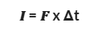
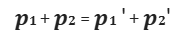
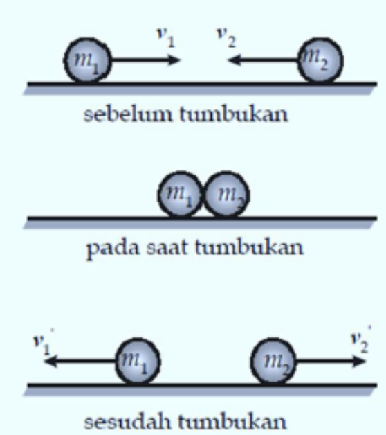

Momentum
Benda yang bergerak dengan kecepatan tertentu mempunyai energi kinetik tertentu. Selain energi kinetik, benda bergerak juga mempunyai besaran lain yang disebut momentum. Pada materi ini kita pelajari momentum pada benda yang bergerak linear yang disimbolkan dengan p. Momentum angular (disimbolkan dengan L) yang dimiliki benda yang bergerak melingkar dipelajari tersendiri pada bab gerak rotasi.
Definisi Momentum dalam fisika adalah ukuran kesukaran untuk memberhentikan gerak suatu benda. Momentum merupakan besaran vektor. Arah momentum searah dengan kecepatan benda.

Keterangan:
- p : momentum (kg.m/s)
- m : massa benda (kg)
- v : kecepatan benda (m/s)
Impuls
Untuk membuat suatu benda yang diam menjadi bergerak diperlukan sebuah gaya yang bekerja pada benda tersebut (F) selama interval waktu tertentu (Δt). Gaya yang bekerja pada benda dalam interval waktu tertentu disebut impuls (I). Impuls yang terjadi pada benda dapat menambah, mengurangi, dan atau mengubah arah momentum benda.
Impuls dapat diformulasikan secara matematis sebagai perkalian antara gaya dengan waktu selama gaya bekerja.
Keterangan Rumus:
- F = gaya (N)
- Δt = waktu (s)
- I = impuls (N.s)
Keterangan Rumus:
- po = momentum awal (kg·m/s)
- Δt = waktu (s)
- pt = momentum akhir (kg·m/s)
- I = impuls (N·s)
- Δp = perubahan momentum (kg·m/s)
Hukum Kekekalan Momentum
"Jika tidak ada gaya luar yang bekerja pada benda, maka jumlah momentum sebelum tumbukan (𝜮pi) sama dengan jumlah momentum setelah tumbukan (𝜮pf)."

Jika benda yang bertumbukan hanya ada dua maka berlaku:
 